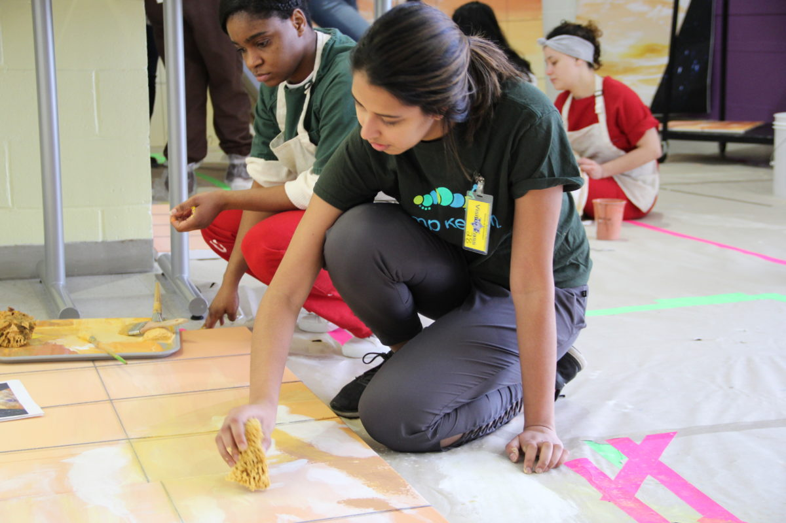
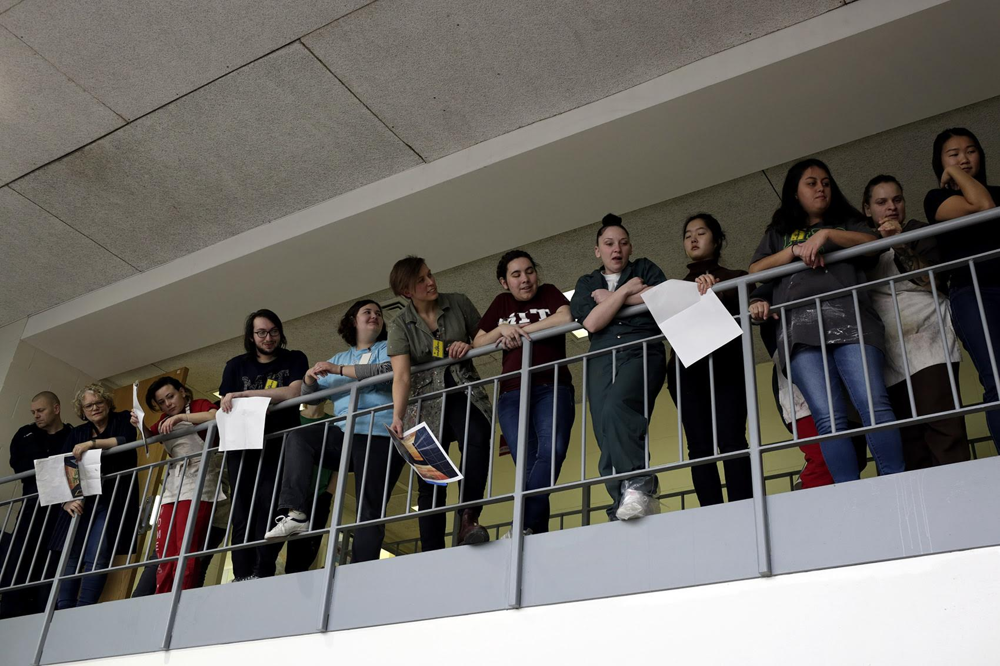
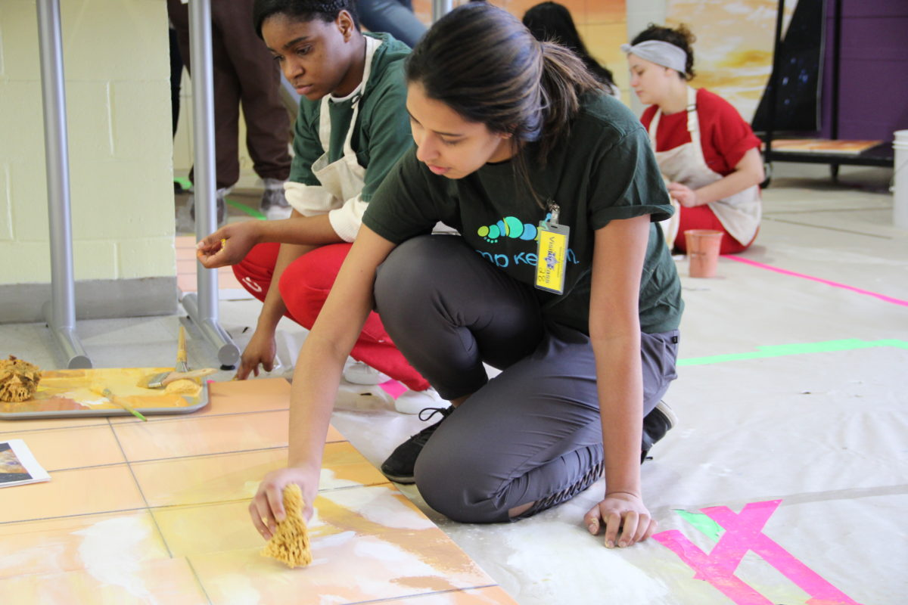
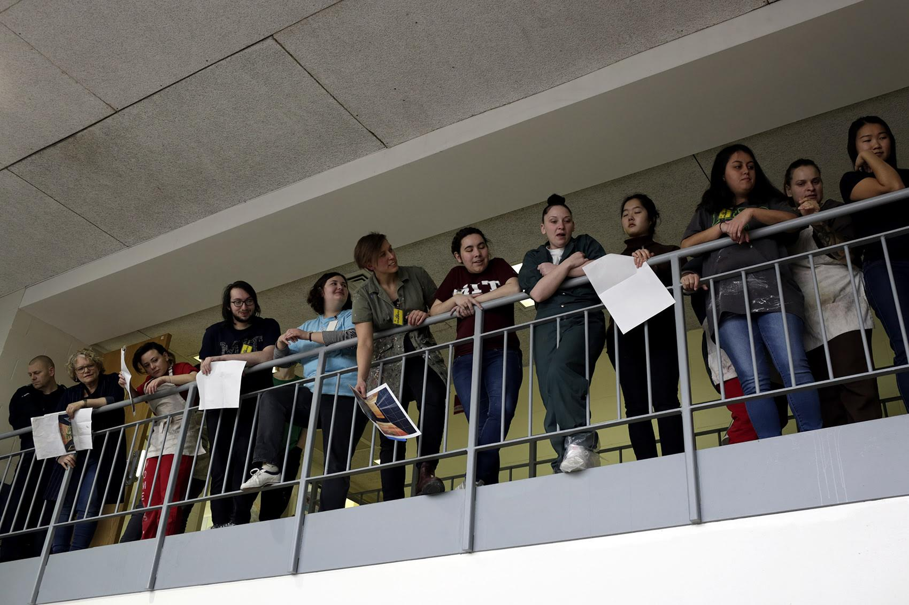
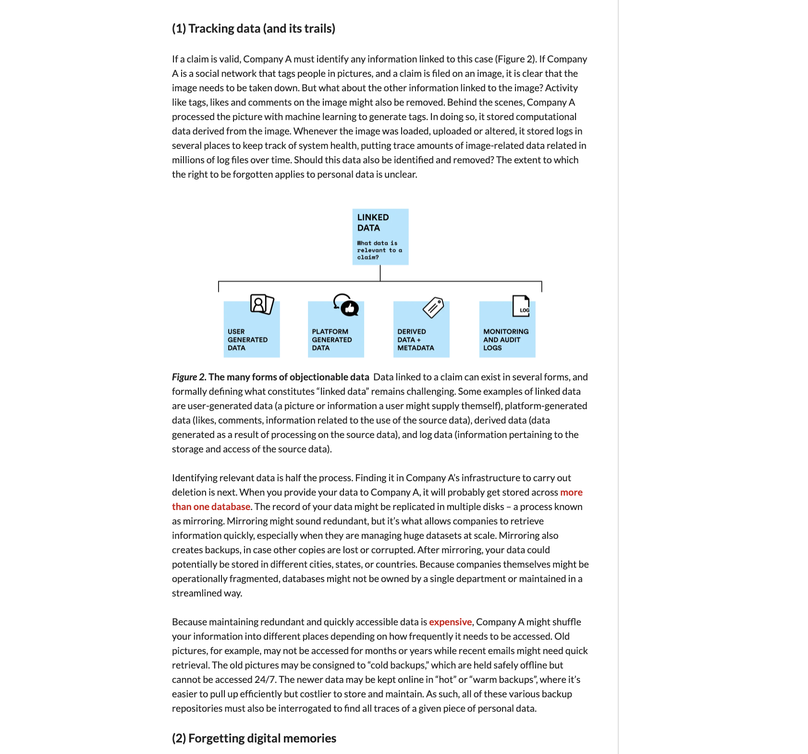
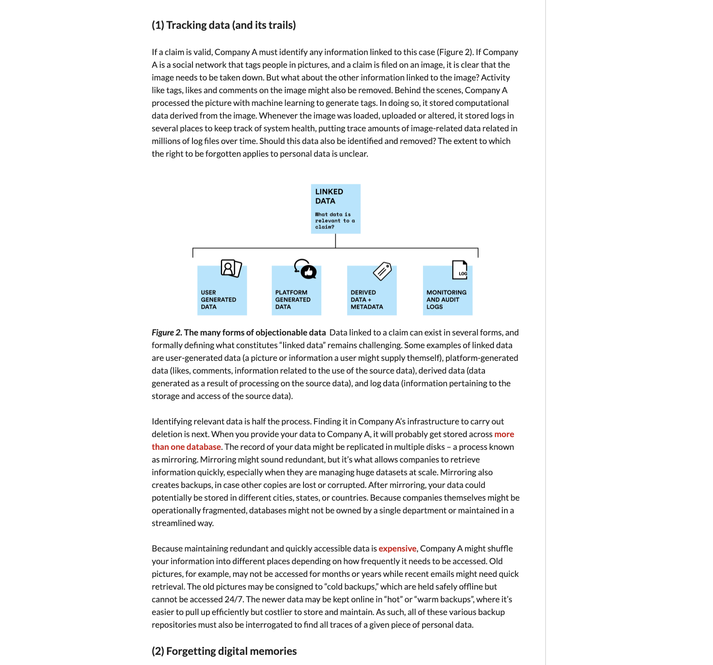

My work was featured in an exhibition at the Harvard Graduate School of Design, alongside other exhibitors including ALLTHATISSOLID, MOS Architects, Megan Paulson, Norman Kelley, Soft Baroque, Synthesis-DNA, Zago Architecture, Zaha Hadid Architects.
This work was produced under the instruction of Professor Max Kuo.
Health Systems serves to document the research, design, development, and impact of MDE student projects from 2017-2018. I served as a co-editor for this book, published by Puritan Press. It's available for free if you'd like to scan through it!
This project, as with many others on my portfolio, would not have been possible without the support of my co-editors and the MDE program's support in getting this work published.
Features some of my anthropology research in context with the course's broader goals, and in context of other student research in Ireland investigating Brexit and the legibility of (hard) borders in the lived experience of border communities
This was truly one of the most transformative experiences I've had the privilege to be a part of - a collaborative mural co-designed and co-created by MIT and HOC participants over the course of a few weeks. This was my first experience with US prisons and inmates, and was deeply humanizing.
The orginal mural is sustained at the South Bay House of Corrections, and a replica is on view on campus at MIT.
An article I wrote for Harvard GSAS' Science in the News special edition, focused on the challenges of data retention and deletion when interpreting the GDPR
I had the privilege of taking 6.s978, a special subject graduate course at MIT, taught jointly with GULC. With Nchinda Nchinda and Courtney Matteson, I produced the Commercial Face Recognition Act (CFRA) based on prior art in privacy legislation and the technical implications of potential legal protections.
Featured on view at the MIT List Visual Arts Center
Inspired by the work of Reuben Margolin, this kinetic sculpture is guided by principles of mathematics. The sculpture generates a rotating sine wave wrapped around a cylinder in 3D space by activating a 2D mechanism in circular motion. The iridescent film panels add an extra dynamic layer to the sculpture, creating sound and interactions with light to further intensify the effects of the sculpture’s motion.
Möbel, co-created with Christina Sun, is a social furniture project designed to provide a bonding experience through a shared struggle. The furniture is intentionally difficult to construct, and requires a minimum of two people for assembly and to enable the embedded lights and sensors on the furniture once assembled. At a time of deep polarization, Möbel offers two participants to endure a nuisance together and experience its final product, together.
Co-created with Christina Sun, "bae" poked fun at the elitism and inherent inapproachability of academic art critiques. Many folks talk about how they wish they could appreciate art because they aren't familiar with the erudite jargon associated with art critique. "bae" is a tongue-in-cheek random critique and jargon generator, aiming to make art appreciation more approachable to all.
...and a video showcasing MIT's Glass and Metalurgy lab! MIT was truly the most incredible playground I could have imagined -- I was lucky to be selected in the lottery to take a semester of glassblowing classes, which I continued until my senior year of college.
With no prior web programming experience (and only a one month Intro to Python course under our belts), me, Deepti Raghavan, and Kimberly Leon entered the annual MIT Web Programming Competition's Rookie Division, and won 1st place for best website.
 



 
